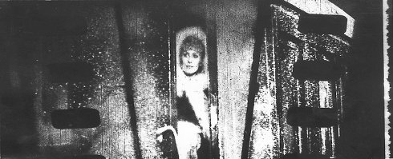
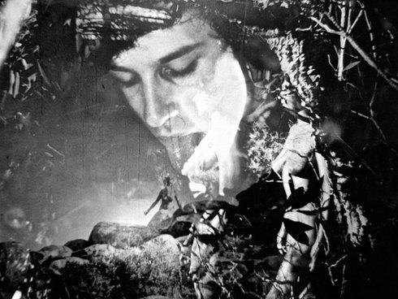
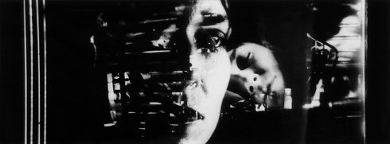
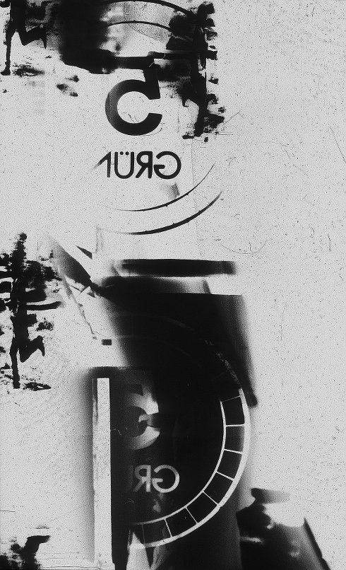
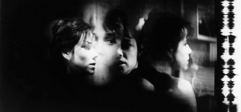

Artist in Focus: Peter Tscherkassky
Samstag 11 okt | 20.00 | filmmuseum münchen
 L'arrivéeAT 1997/1998 3 min | ohne Dialog | 35mm CinemaScope Zurück an den Start, zurück zu „lumière” und den Lumières, die aus der Ankunft eines Zuges auch einst einen Film gemacht haben. Dann setzt die Verschmutzung ein, die Story, wenn man will: Es rauscht in der Tonspur, es kracht, knistert, dröhnt. „L’Arrivée“ macht Kino aus Fehlleistungen, aus Entgleisungen, ist die Anbahnung eines Films, das mit Lust am Desaster instrumentierte Melodram der verschobenen Schauwerte. (Stefan Grissemann) |
 The Exquisite CorpusAT 2015 19 min | ohne Dialog | 35mm Während die meisten meiner Filme aus einer dominierenden Found-Footage-Quelle gespeist wurden, dienten diesmal mehrere Filme als Ausgangsmaterial. Neben einigen Rushes für Werbefilme waren dies ein amerikanischer Erotikthriller aus den 1980ern, eine britische Komödie aus den frühen 1960ern, ein dänischer und ein französischer 1970er-Pornofilm, ein italienischer Softsexfilm von 1979, sowie ein (britischer?) Amateurfilm, der sich am ehesten als „Nudistenfilm“ bezeichnen ließe. (P. Tscherkassky) |
 Dream WorkAT 2001 11 min | ohne Dialog | 35mm CinemaScope In „Dream Work“ ist, wie in einem tatsächlichen Traum, kein Bild mit sich allein, jedes einzelne Bild radikal zufällig, und doch der Zusammenhang so zwingend, dass eine Alternative nicht denkbar ist – es sei denn, in einem anderen Universum. Doch dies ist die beste aller möglichen Traumwelten, so schrecklich sie erscheint. (Bert Rebhandl) |
 Instructions for a Light and Sound MachineAT 2005 17 min | ohne Dialog | 35mm CinemaScope Der rasch identifizierbare Held wird, obwohl er sich ebenso heldenhaft wehrt, an den Galgen geknüpft, wo er den Filmtod in Gestalt eines Filmrisses stirbt. Daraufhin stürzt er ins Reich der Schattenwesen. Im Untergrund der Kinematographie begegnet er einer Unzahl an Instruktionen, mittels derer im Kopierwerk sämtlichen filmischen Schattenwesen ihre Existenz ermöglicht wird. (Peter Tscherkassky) |
 Outer SpaceAT 1999 10 min | ohne Dialog | 35mm CinemaScope Die Ahnung eines Horrorfilms, lauernde Gefahr: Ein Haus, nachts, im Blick der Kamera leicht verkippt, taucht irrlichternd aus tiefem Schwarz auf und darin wieder ab. Gefundenes Material, Hollywood, ist die Basis dieses Films. Die Gestalt, die durch die Bilder schleicht, geschleudert wird und gegen sie schlägt, heißt Barbara Hershey. Tscherkasskys dramatisches Recycling, die Neuabtastung und Umbelichtung des Materials, Kader für Kader, schiebt die Bilder und die Räume ineinander, entzieht dem Betrachter jeden Boden und spaltet die Gesichter, wie im bösen Traum. „Outer Space“, ein Schocker filmischer Fehlfunktionen, ein hellraiser des Avantgarde-Kinos, beschwört ein Inferno herauf, das seine Vernichtung (der Erzählung, der Illusion) mit ungeahnter Schönheit betreibt. (Stefan Grissemann) |